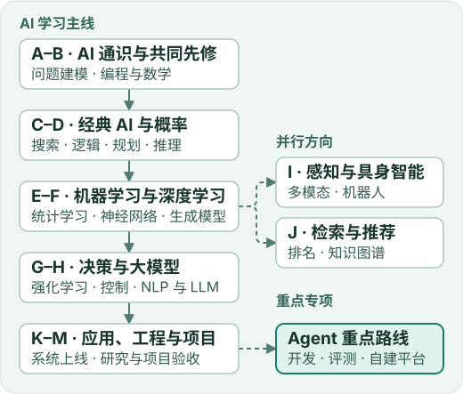

待审核
AI 学习总路线
学习主线从问题建模开始，经数学、经典 AI、概率、机器学习和深度学习，到模型、应用、生产与研究验收。先按主线建立基础，再用专项和项目检验理解。
路线总览

实线表示建议学习顺序，虚线指向并行方向或专项。具体先修见各知识点。打开 Agent 重点路线 · 打开 52 周学习计划
按模块打开
- AI 通识与共同先修：A AI 通识与问题建模 · B 编程、数学与实验基础。
- 经典 AI 与概率推理：C 经典 AI：搜索、逻辑与规划 · D 概率推理与决策。
- 机器学习与深度学习：E 统计学习与机器学习 · F 深度学习与生成建模。
- 决策、强化学习与大模型：G 序贯决策、强化学习与控制 · H 自然语言处理与大模型。两者可按先修并行。
- 应用、系统与研究交付：K LLM 应用、RAG 与 Agent · L 模型系统、训练与生产化 · M 负责任 AI、研究与项目验收。
- 并行方向：I 视觉、语音、多模态与机器人 · J 信息检索、推荐与知识图谱。按 专项进入条件 选择。
按周安排见 52 周学习计划，每周都链接到有关知识点和验收任务。
按目标选路线
- 学科基础 · 公共基础
- 大模型研发 · 模型方向
- AI 应用工程 · 系统方向
- 感知与具身 · 专项方向
- 检索、推荐与图 · 专项方向
- Agent 重点路线 · 以应用工程为基础的专项，适合从手写循环、评测一路做到自建平台。
- 两周理论与动手练习 · 快速体验 Agent 的工具、停止条件和评测。
- 实验 01：工具调用与有界循环 · 记录自己的实现和实验结果。
查资料与课程对应
- 学习资料目录 · 按类型浏览，知识点页也列出首选资料。
- 研究依据与课程框架对照 · 查课程、研究方法和 CS2023 AI 知识单元。
- Agent 知识分支与 DSH 覆盖边界 · 查 25 项维度及其知识点归属。
全库为 13 个模块、78 个知识点、171 条先修关系、132 项资料。内容待审核，学习时可在 Obsidian 使用局部图查看链接，使用反向链接查看该知识点被哪些笔记引用。